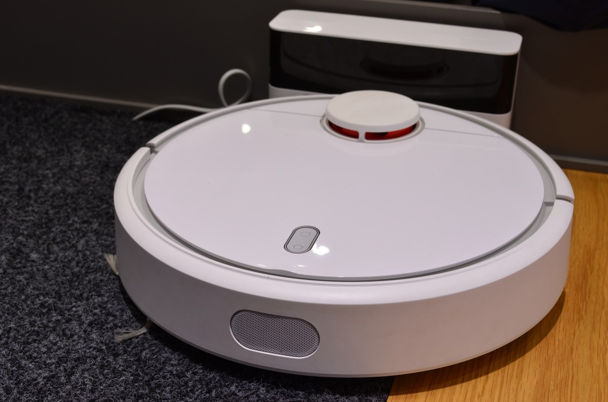

Robots aspiradores · Guías y comparativas
Menos tiempo
limpiando.
Más tiempo para ti.
Encuentra lo que necesita tu casa y entiende qué merece la pena antes de elegir tu próximo robot aspirador.
Empieza por la guía de compra ↗
01 · Elige según tu casa02 · Entiende las diferencias03 · Cuida lo que compras
Por dónde empezar
Una buena elección empieza aquí.
Tres lecturas para poner las cosas en orden.
01
¿Qué robot necesita tu casa?
Espacio, alfombras, mascotas y rutinas: prepara tu lista antes de mirar modelos.
Leer la guía ↗02¿Con base de autovaciado?
Compara las tareas que hace cada base y el mantenimiento que sigue en tus manos.
Ver la comparativa ↗03Pequeños cuidados, menos imprevistos.
Una rutina de revisión para cepillos, depósito y sensores, siguiendo el manual de tu modelo.
Ver los cuidados ↗Elige tu siguiente lectura
Resuelve tus dudas, paso a paso.
Compra con criterio
La mejor ficha técnica no siempre es la mejor opción para ti.
Empieza por los problemas que quieres resolver. Después compara las funciones que utilizarás, el espacio para la base y los consumibles que necesitarás.
Cómo planteamos nuestras guías ↗